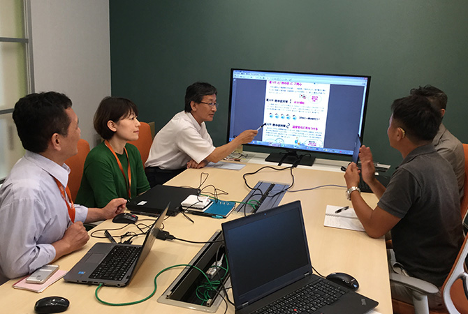

LIXILでは、ノーマライゼーションの考えを尊重し、さまざまな障がいを持った方が、それぞれの能力、特性に応じて、健常者とともに仕事ができる職場環境づくり、仕組みづくりを進めています。LIXILの障がい者雇用の特徴は、障がい者雇用を主目的としたいわゆる特例子会社を設けず、LIXIL本体の中で、LIXILの業務を担う障がい者雇用を進めていることです。
LIXILでは、本社のある東京のみでなく、北海道から九州まで、全国各地の営業拠点、生産拠点、研究・開発拠点、物流拠点で、障がい者が健常者と共にさまざまな業務を担っています。障がいを持った従業員が、健常者と同じ職場で一緒に働くことで、障がい者本人だけではなく健常者も多様性のあり方を深く理解することができます。それぞれの特性を受け入れて尊重しあうことで、信頼関係を築きあえる職場環境の創出という、まさにありたい姿としてのダイバーシティの実現につながっていくと考えています。
現在LIXILには、身体障がい者、知的障がい者、精神障がい者が在籍しています。2019年6月1日現在「厚生労働省 障害者雇用率制度」算出方法に基づく障がい者雇用数は458名、障がい者雇用率は2.33%です。今後も継続して雇用率の維持、向上に努めてまいります。
LIXILの障がい者雇用の推進で重要な役割を担っている施設として、本社人事部に設けられた障がい者就労センター「WING NIJI」があります。
「WING NIJI」では、LIXIL全社の障がい者雇用の促進、情報収集やLIXILの障がい者雇用の紹介を行っています。同時に、さまざまな障がいを持つ従業員が、実際に事務作業を中心とした多様な業務に従事し、そこで必要となる業務適性の評価や就労上の支援策を検討することで、障がい者がより活躍できる職場環境や職務能力の開発に取り組んでいます。
2019年6月1日現在、「WING NIJI」には、身体障がい者15名、知的障がい者12名、精神障がい者9名の計36名の障がい者が在籍して活動を進めています。
「WING NIJI」の設立は、昨今の障がい内容の多様化の中で、発達障がい、高次脳機能障がい等を含む精神障がいや、視覚と聴覚、知的と身体といった重複障がいへの対応、そしてこれまで作業的な業務が比較的多かった知的障がい者の業務範囲を拡大していくことも目的としています。具体的には、多種多様な事務業務（デスクワーク）を用意し、その対応を模索することで、さまざまな障がいを持ったメンバーが、その特性に合った事務業務にチャレンジできる可能性を探っています。
出前授業プログラムで使用するツールを丁寧にパッケージして各エリアへ発送する作業も請け負っています「WING NIJI」の特徴は、隣接するオフィスなどからの多様な依頼業務を請け負うことで、障がい者の適性や能力に応じたさまざまな業務を用意できることです。年間400件を超える単発の業務に加え、納期の長い大口業務や常時対応が求められる定常業務を織り交ぜることで、仕事が固定化せず、在籍メンバーにとってもその特性に応じた変化に富んだやりがいのある業務設計となります。そしてそれは成長へのチャレンジにもなっています。
「WING NIJI」の健常者スタッフは4名で、業務指示、進捗管理、課題対応には多くの障がい者メンバーが参画しています。外部支援機関との連携や障がい者雇用に関する講習会等にも障がい者メンバーが積極的に参加し、障がい者職業生活相談員の資格を持つ障がい者も4名在籍しています。ここでは、健常者が障がい者を管理するのではなく、健常者と障がい者が共に組織・業務を管理・運営することが基本となっています。
参加者の半数以上が障がい者で開催される支援スタッフ会議また、「WING NIJI」では、精神障がいの方への対応にも力を入れています。精神障がい者の場合、人間関係や業務上のストレスに敏感な人も多く、また困りごとをなかなか言い出せないケースも散見されます。そこで、障がい者職業生活相談員の精神障がいメンバーが中心となる支援スタッフが、当事者の視点でメンバーの負荷や困りごとに注意を払っています。同時に、現場のリーダーである身体障がいメンバー、精神障がいメンバー、健常メンバーからなる支援スタッフ会議を活用することで、わずかな異変の兆候もいち早くキャッチし問題解決にあたります。採用時点から外部支援機関と連携し、精神障がいメンバーの情報を共有し対応することで、メンバーの安定と定着を図っています。
さらに、健常者と障がい者が共に働く職場づくりのために、隣接する本社オフィス等への派遣出張業務も行っています。短時間から始めて徐々に時間を増やし、また業務内容を派遣先の健常スタッフが指示することで、相互の関わりを増やし、ノーマライゼーションの考え方に沿ったLIXILの目指すダイバーシティの実現を進めています。
LIXILは、このような活動によって、2016年5月精神障がい者等を中心とした障がい者の雇用促進に積極的に取り組む企業を評価する、厚生労働省委託事業「精神障害者等雇用優良企業認証」（事務局：一般社団法人障害者雇用企業支援協会）を取得しました。
【所 在 地】〒136-0072 東京都江東区大島2-14-7
【建物面積】388㎡（約117坪）
【収容人数】40名
【竣工】2014年7月2日
ユニバーサルデザインとパッシブファーストの技術を取り入れ、社員の健康や快適性、環境負荷低減を追求しています。木造平屋の良さをいかし、温かみのある家庭のような雰囲気を創出することで、誰もが働きやすいオフィス環境を整えています。